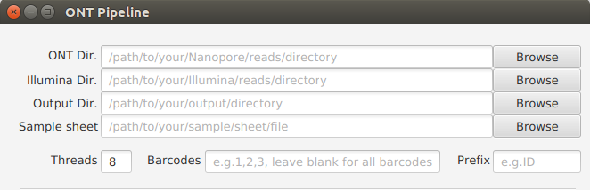

Allgemein Einstelllung¶
ONT Verzeichnis(ONT Dir.) (Erfordlich)¶
Der Verzeichnispfad zu den Nanopore-Reads einzugeben.
Bemerkung
- Beispiel:
/path/to/your/ONT/reads/directory
ONT Verzeichnis(Illumina Dir.) (Optional/Erfordlich)¶
Der Verzeichnispfad zu den Illumina-Reads einzugeben.
Bemerkung
- Beispiel:
/path/to/your/Illumina/reads/directory - Erfordlich wenn „hybrid-assembly“ oder/und „polishing“ ausgewählt wird/werden.
Ausgabeverzeichnis(Output Dir.) (Erfordlich)¶
Der Verzeichnispfad zu den Ausgaben einzugeben.
Bemerkung
- Beispiel:
/path/to/your/output/directory
Musterblatt(Sample sheet) (Optional)¶
Der Pfadname zum Musterblatt einzugeben.
Bemerkung
- Das Dateiformat des Musterblattes muss CSV oder TSV sein.
Warnung
- Unterstrich(‚_‘) ist im Probenname nicht erlaubt.
Präfix(Prefix) (Optional)¶
Ein Präfix für die Umbenennung der Nanopore-Reads nach „demultiplexing“ einzugeben.
Bemerkung
- Bespiel: ID .
- Standardwert: barcode .
(Theads)Threads (Erfordlich)¶
Die benötige Anzahl der Threads/CPUs für den Pipeline-Lauf einzugeben.
Bemerkung
- Standardwert: 8.
(Barcodes)Barcodes (Optional)¶
Welche Barcodes, die zum Pipeline-Lauf gebracht werden, einzugeben. Einfach die Barcode-Nummern, die mit dem Komma getrennt werden, einzugeben.
Bemerkung
- Beispiel: 1,2,3,4
- Falls alle Barcodes zum Pipeline-Lauf gebracht werden, einfach dieses Feld leer lassen.